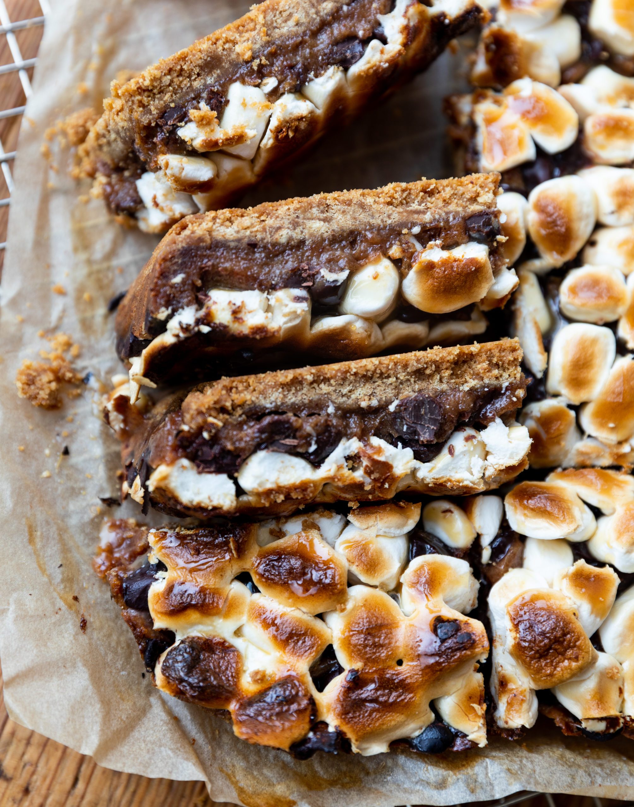

S'Mores

Description
A s'more is a campfire treat popular in the United States and Canada, consisting of one or more toasted marshmallows and a layer of chocolate sandwiched between two pieces of graham cracker.
Ingredients
- pasta
- sauce
- cheese
- ground beef
- onion
Steps
- Prepare a pot of water to boil pasta
- Heat sauce in sauce pan
- Lightly warm beef crumbles in olive oil on stovetop
- Make a cheese paste
- Place boiled pasta in baking dish, layer with cheese and beef
- Place in oven for 40 minutes at 350 Degrees